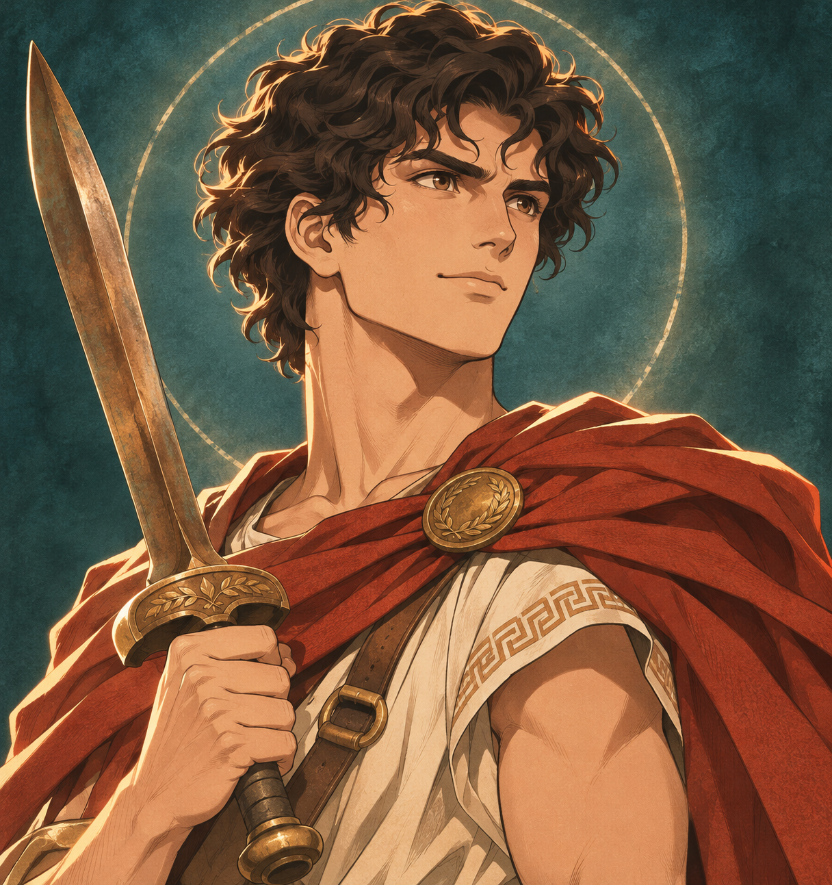

PROTAGONIST · HERO
Theseus
CourageGrowthBig choicesDark curly hair and warm brown eyes. He begins with a youthful, agile face; as a king, his expression gains weight.
Signature props Father’s sword · terracotta cloak
Palette Sea teal #254f69 · terracotta #c45c37
Performance note Acts first, then learns to face the consequences.
Palette Sea teal #254f69 · terracotta #c45c37
Performance note Acts first, then learns to face the consequences.